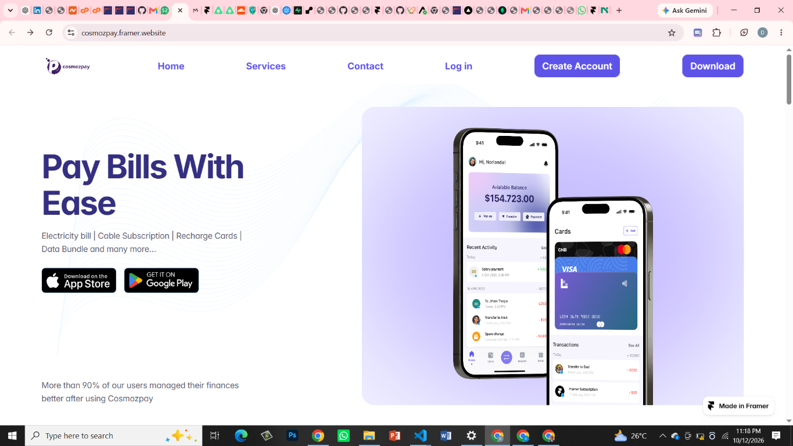

01Fintech · Payments
COSMOZPAY
A digital payments platform for everyday essentials, including airtime, data, electricity, cable subscriptions, and education payments.
How I approached the build
The page introduces the core bill-payment offer immediately, pairs it with a clear mobile-app preview, and keeps app download options easy to find. The clean layout and focused service message help make everyday payments feel accessible.